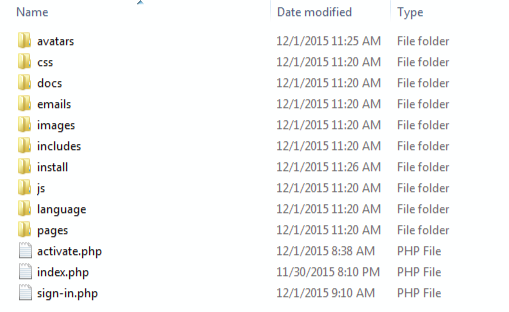
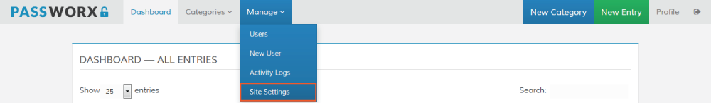

If you have any questions that are beyond the scope of this help file, please do not hesitate to contact me via my Support Center.
I am always happy to help if you have any questions relating to Passworx.
I put a ton of love into this new version of Passworx.
If you have any questions or would like to give me feed-back on Passworx's update, I would love to hear them. Your feed-back is what inspires new ideas for future updates. You can post your questions/feed-back on Passworx's Forum at my Support Center.
As always, a BIG Thank You to all of my buyers, I really appreciate your continued support & trust in me.
Unzip the Passworx file and take a look at the file structure. You should see 10 folders and 3 files.
This is a new Version for Passworx, and not an update. You will want to install Passworx V3 with a new database, and possibly, in it's own folder.
First step is to create a MySQL database, and if you do not have a default one, a database user. This process is explained in great detail on many websites and web hosts. Once you have the database setup, you will need:
Upload all the files you unzipped to your web host, keeping the file system intact.
You should now have the following folders/files on your host account:
Installation is quite easy and only takes a few minutes.
Once Passworx has finished uploading, simply go to http://www.yoursite.com/passworx/ (or wherever sub-folder you uploaded it to) and follow the on-screen instructions.
Easy to do, just follow the defaults and plug in your specific information.
Passworx REQUIRES PHP 5.3+ & MySQLi Connection, mcrypt_encrypt / mcrypt_decrypt, and imagecreatefrompng (PNG Image Support).
There is a Server Configuration Check that will display before you will be able to install Passworx. If all checks out, great, click the button "Go! Start the Installation".
If not, you will not see the "Start the Installation" button and will not be able to install Passworx. Check with you host, and see if there is anything they can do for you.
Once you have input your database information, click on the "On to Step 2" button.
If everything was configured correctly, you will see the following:
If you do not see the message above, and get a blank screen or an error — check your error logs. Most of the time this happens due to your web account/host not supporting a needed function. This can happen even if you pass the pre-installation check. Check with your web host and see if there is any thing they can do to help.
Again, follow the defaults and plug in your site's specific information. You can set your Administrator email, password and Site name to be anything you would like. Once completed, be sure to hit "On to Step 3" to save your settings.
*If the Installation URL is not auto-filled, you will need to enter it manually.
Include any sub-folder Passworx may be installed in. (ie. http://www.mydomain.com/passworx/)
Look at your browser's URL bar, and use that (remove the install/install.php from the end) as your Installation URL.
Complete the Primary Admin Account form. This is the main, "Superuser" for Passworx. This Admin Account cannot be deleted through the web UI, only from within the database (ie. PHPMyAdmin).
Once you have filled in the information for the Primary Admin, click the "Complete Install" button to complete the installation.
Once installation is completed, you will need to go back into your FTP application, and either rename or Delete the installation folder before you can log in as Administrator.
Once Passworx is installed, you can update the Site Settings after logging in as the Primary Admin. Go to Site Settings page from the Manage dropdown menu.
Set up Passworx to fit your your specific site's needs. All setting options have explanations under the specific field.
Passworx is translation ready. The primary Localization files are located in the folder named language/. If you want to use a different language other then English, you will need to
translate the "custom.php" file. Once translated, you can then load that file via the Global Site Settings — Localization drop-down.
To change the way dates are formatted, you will need to modify the includes/functions.php file. Follow the instructions starting on line 49.
Uncomment (remove the double slash - //) from the date format you want to use
Comment (Add a double slash - //) to the front of the date formats you do NOT want to use
While Passworx already has a modern interface based on Twitter's Bootstrap (version 3.3.5), many of you will want to integrate it into your own design. This is very easy, however, you will need to be able to write HTML/CSS code. For those that aren't versed, here is a quick overview. The easiest way to change the look is by editing the default CSS files named "styles.css" and "custom.css". Both of these files can be found in the css folder.
The bootstrap.css file is the original, unmodified Bootstrap styles, and you should not alter this file. If you want to make any changes to the bootstrap components, you should add/modify the changes to the custom.css file only.
Passworx uses a few images for the different logos and email templates.
images/logo.png (250px x 45px)images/email_logo.png (310px x 45px)images/email_header.png (156px x 158px)images/captcha.png (125px x 48px)The icons used in the sorting images for all dataTables are located in images/sorts folder.
Icons are generated from an Icon Font: Font Awesome (version 4.4.0). Check out all of Font Awesome's icons & usage at: http://fontawesome.io.
Please, if you have any questions, run into any issues or just need some help, do not hesitate to contact me via my Support Center.
I believe in providing the best support possible, and I monitor my Support center just about 24/7.
If you are thinking of giving Passworx anything less then 5 Stars, please tell me what I can do to make it a 5 Star experience for you.
I love to hear feedback, and welcome any suggestions you may have to make Passworx better.
If you are having problems with Passworx after successfully installing and logging in the for the first time you should check your FTP software settings. I have found in many cases that numerous FTP programs are not uploading files correctly.
Check your FTP program to see if it is uploading files in ASCII - which is causing the file code to be uploaded in one long line.
Try changing it to Binary and uploading the files again. Upload everything except the install folder and the config file (or better yet, if you have not started using Passworx,
just wipe the install and the database and reinstall a fresh copy).
I use CuteFTP for my uploads and ran into this problem when all of the sudden everything I was working on just seemed to stop working as expected.